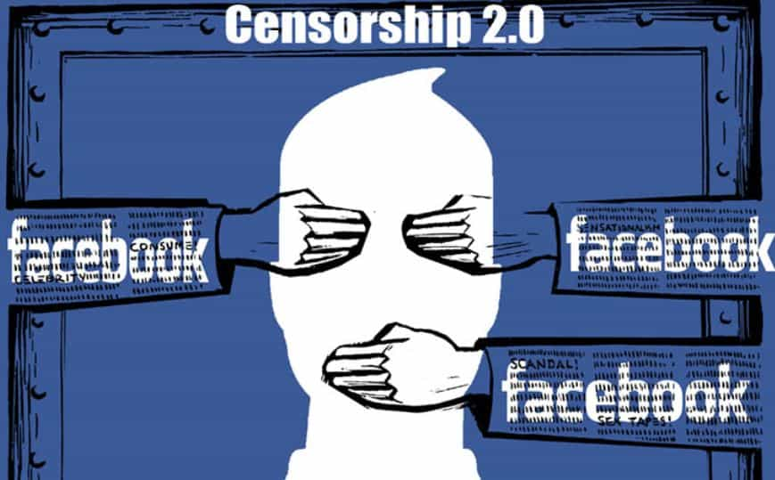
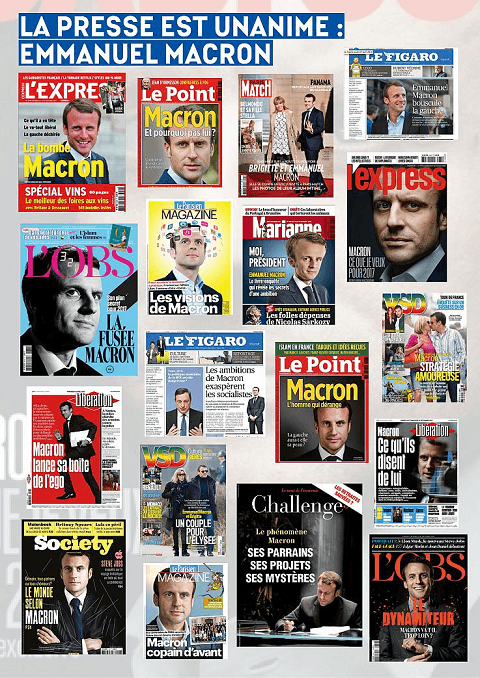

Libertas is a young bard traveling along the endless road to self-improvement and recounting his adventures. You can follow him on Twitter.


We can safely say that the establishment is learning and adapting from their stupendous losses in 2016, so they’re adapting their messaging and persuasion attempts accordingly. Initial A/B tests like the panic over “fake news” flopped, but they quickly bounced back on their feet. The recent election in France, which saw a technocratic banker very competently astroturfed as a change-agent outsider, was the biggest signal that their field tests have been quite successful. What sort of persuasion tactics are now being used?
These are likely still in beta testing, but they were used to great effect in the French campaign. Notice that every time Marine Le Pen was mentioned, she was preceded by the term “far right.” Meanwhile, Emmanuel Macron’s name was accompanied by the “centrist” tag. Even in America, even on Fox News, these tags accompanied their names without fail every time I heard them in the media.
These labels, which Scott Adams calls “linguistic kill shots,” can serve a variety of purposes, but the overarching one is that they channel attention to a certain attribute. It’s a form of Pre-Suasion, where directing attention to favorable concepts creates “privileged moments” that increase receptivity to your major message. In this case, always calling Le Pen “far right” and Macron “centrist” planted the seeds to make it easier to dismiss the former as dangerous while increasing the credibility of the latter. The facts that economically, Le Pen’s program is quite far to the left, while Macron has signaled significant belligerence to European countries not towing the EU line, were immaterial.
These linguistic kill shots weren’t as advanced as the ones Donald Trump was using in his own campaign, which involved more sensual cues that were also more open to confirmation bias, but it is worth noting that the establishment seems to be testing these out.
When the media tried to accuse its opponents of spreading “fake news,” the label quickly backfired because they engaged in selective reporting or outright hoaxes far too many times, a tendency that certainly hasn’t diminished since Trump’s inauguration. While this effort turned against them on the hot battlefield of persuasive language, the victory has only been partial, because it was the springboard from which they got their pretext to start censoring social media, which proved crucial in bypassing the fake news media to create favorable news cycles of our own while undercutting the establishment narrative.
Increasingly, the “fake news” excuse has been used by the big social networks to censor or demote information they don’t like. Self-appointed, so-called independent “fact checking” sites are now being used in Facebook’s algorithm. Google has made some noise about changing its own algorithm to filter what it calls “fake news.” Twitter, in the meantime, has (allegedly) throttled tweets they don’t like. Replies to Donald Trump get filtered so that only negative ones show up first. Trending tags are almost always hysteria that shores up the establishment’s narrative.
Who determines “fake news?” Who decides what you should get to see? Some unaccountable technocrat? You see where this is going. It’s a dangerous road which dovetails neatly with the next aspect of this, the heavily selective reporting.
In France, a couple of days before the election, emails from the Macron campaign were leaked. They were quickly authenticated, or most of them, anyway. Wikileaks didn’t find any false ones (last I checked). The fake news did everything it could to conceal the contents of the emails. The law in France prohibiting any kind of campaigning information in the 48 hours before an election complicated things, but you had American pundits and presstitutes openly calling for the concealment of this newsworthy information from the public because it would negatively affect their team.
Predictably, this was given the fig leaf of the “because muh Russia” excuse, with little or no evidence. Let’s also be honest – if Le Pen was looking strong and damaging emails were leaked, would the campaigning law be adhered to so strenuously by the media in France? Somehow, I doubt it.
The “free” press is a figment of the imaginations of “journalists” who envision themselves as sacrosanct guardians of the public good, but in truth, they will do whatever their masters tell them. Their job is to propagate the narrative, not report the truth. Therefore, we will increasingly see the media simply refuse to report on anything that undermines the establishment narrative, all the while, social media will be censored, as we saw a major crackdown on Facebook and Twitter accounts, blacking out many that were sharing the contents of the Macron emails. Jack Posobiec was singled out in particular in a torrent of hit jobs because he was one of the first prominent people sharing them.

How do we adapt to this? Roosh posited a while ago that Facebook and Twitter passed their peak of importance for information warfare and that new mediums would arise in the years before the next American election. The creation and boosting of new platforms like Gab and Minds seems to be the first answer. Monetization for counter culture figures and journalists may become increasingly difficult also, as the YouTube apocalypse is well underway, Return of Kings was shut out of PayPal, and even Dave Rubin, a relatively uncontroversial figure who is nevertheless a skeptic of the current cultural zeitgeist, had problems with his Amazon Affiliate account. This will be an ongoing battle that will demand constant innovation and adaptation.
During the Brexit campaign, the pro-EU Remain side ran on something they called “Project Fear.” The key message was that leaving the European Union would be a disaster and really, really scary. The same was largely true of the Hillary Clinton campaign, which ran more on fear of Trump than on any benefit that she was offering. Both campaigns lost. Partly this was because they weren’t running their fear-based messaging as well as they could have, but partly also it was because people want to vote for something, rather than just vote against something.
The Leave and Trump campaigns offered aspirational messages with clear benefits, while all the way to Election Day I still couldn’t figure out why the Democrats wanted me to vote for Hillary Clinton rather than just against Donald Trump. Meanwhile, the Leave campaign offered Britons to “take back control of their country.”
In France, the story was different. Emmanuel Macron was elevated and celebrated. Recall from Pre-Suasion that what’s elevated in our attention is what we think is most important in that moment. While Le Pen was dismissed as “far right” and Francois Fillon, who would have likely won ordinarily, was destroyed by massive attention paid to allegations of underhanded financial transactions (when attention was paid to him at all), the media gushed about how awesome Macron was.

He was being billed as a change agent, an outsider who would shake things up, in complete contrast to his history… and it worked.
Macron’s youth was also an advantage to him. One of the French regulars on the forum theorizes that there will soon be a trend of running Macron-like figures—young, good-looking men, particularly to shore up the middle-aged white women vote. Recall that the single biggest predictor of whether someone would vote for Donald Trump last November was whether he or she married (as is general for rightist candidates). It is possible the establishment could start running younger, more attractive men to peel off the married women vote.
It is well known that more attractive candidates get more votes than less attractive ones, which up to now has more often benefited right wing candidates than left wing ones, as it is also well known that conservatives are typically more attractive than liberals. Will there be a program of sorts to groom and elevate young, somewhat attractive candidates by the establishment going forward?
It’s too soon to say for sure, and for the time being, the Democratic Party in America is as heavily committed to identity politics as ever, so I don’t see any of these kinds of Macron-like candidates for President in the Democratic Party’s near future. One race is worth noting though, the runoff for the seat previously held in Georgia by HHS Secretary Tom Price. There you have a candidate that was heavily invested in by the party establishment, Jon Ossof, who at 30 years old, seems to fit the bill. He came within a hair’s breadth of winning the seat outright. A special election will soon be held.
We’ll see where it all goes, but I agree with the guys on the forum. We likely won’t be seeing any more Hillarys in the future. Instead, we’ll be seeing astroturfed candidates to try and capture the populist energy, but who are wolves in sheep’s clothing.
The establishment knows it needs to innovate its tactics. The old paradigm is collapsing. As I warned in December, the Russia hysteria is highly engineered and has successfully turned every mundane thing into a constitutional crisis. The fake news media is working on overdrive to pay no attention to anything else. It’s also given the establishment a pretext to easily censor bad news for them, as seen in France.
Since calling people “racist” doesn’t work as well as it used to, they’re moving to something else, ironically playing on man’s tribal nature (what Cialdini would call the principle of unity in Pre-Suasion) and accusing their opponents of favoring an enemy out-group. In fact, Roosh warned some time ago that the globalist establishment would use nationalistic patriotism to favor their own cause, and to therefore not take it too far. Beware, they say: “the Russians are coming!”
I’m not sure how long this tactic will work, but it is new and has been effective, a sure sign of adaptation. Don’t assume the rules of 2016 will be the rules going forward. The last war is the last war.
Keep your eyes open in the years and elections to come. The chess game never ends.
Read Next: John Lennon’s “Imagine” Programmed You To Accept The Globalism Nightmare